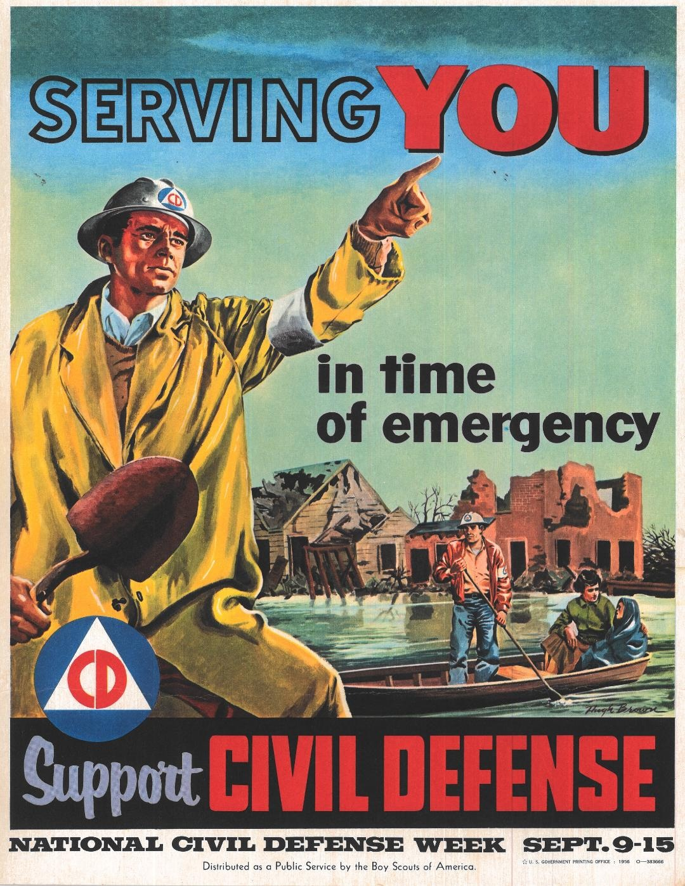
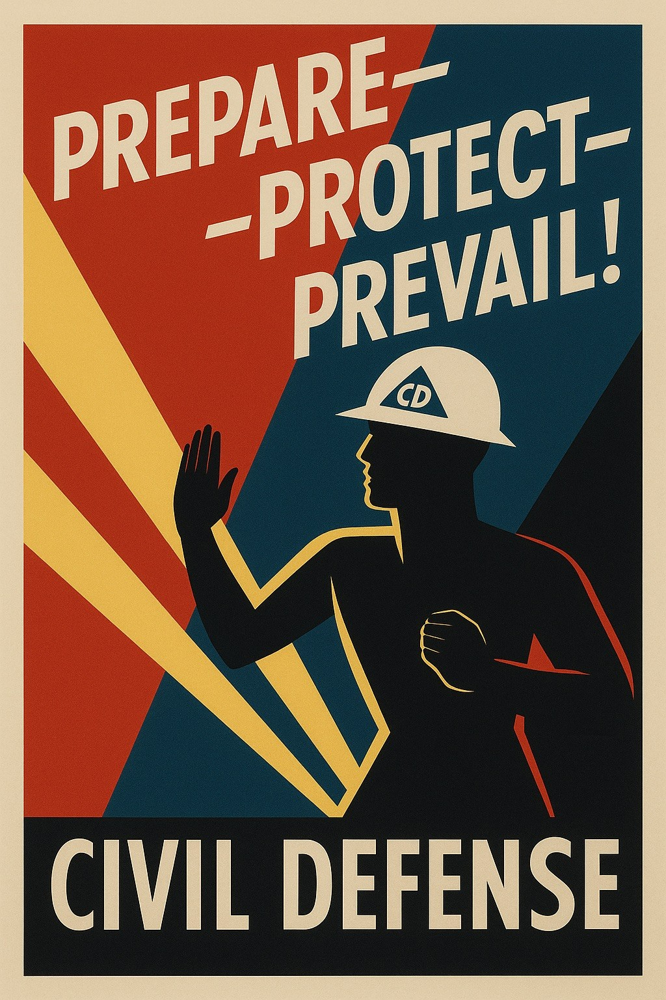

Qué Puedes Hacer Con Ella
- Advertir a otros sobre peligros tocando el mapa.
- Añadir comentarios, fotos, videos u otros archivos adjuntos.
- Recibir notificaciones de nuevas alertas cerca de ti o en tu mapa actual.
- Compartir en redes sociales, por mensaje de texto o correo electrónico.
- Discutir una alerta mediante videoconferencia segura. (Disponible este otoño.)
Transmite con Seguridad
Resiste el Rastreo
- No puedes ser identificado como persona porque no hay inicio de sesión, registro ni cuentas. No se utiliza número de teléfono ni correo electrónico. No hay tienda de aplicaciones que registre las descargas. Los usuarios pueden optar por permitir que otros los reconozcan en múltiples interacciones, sin revelar su identidad real.
- Es extremadamente difícil identificar tu dirección IP o los patrones de red, porque las alertas se distribuyen de teléfono a teléfono a través de una red entre pares.
- Las notificaciones se envían directamente a través de la aplicación en primer plano en tu teléfono, sin pasar por el servicio de mensajería de Apple o Google. (Las notificaciones con la aplicación en segundo plano estarán disponibles este invierno.)
- Cada alerta desaparece de toda la red después de 24 horas. No se recopilan registros de mensajes, comentarios ni temas solicitados, y este no es un sistema de archivo ni de almacenamiento a largo plazo.
Resiste la Censura
- Ningún usuario puede ser censurado porque no hay cuentas. Nadie puede robar la información de tu cuenta porque no existe.
- Ningún contenido puede ser censurado; no hay una organización central que controle la red o tenga poder para modificar el contenido.
Resiste el Bloqueo
- Ninguna tienda de aplicaciones puede bloquear Defensa Civil: la aplicación es simplemente una página web.
- Bloquear servidores web o nombres de dominio no puede impedir el acceso a quienes ya la tienen, porque la aplicación guarda en caché todo lo que necesita en el primer uso. El código fuente abierto está disponible para que cualquiera pueda alojar un espejo alternativo.
- No hay servidor de back-end ni centro de datos que bloquear. Todos los datos de alertas son completamente entre pares. Todos los espejos comparten esta red: una publicación en civildefense.io aparece en el espejo de ki1r0y.com y viceversa.
- Bloquear el tráfico de red es extremadamente difícil porque los datos de bajo nivel son idénticos al tráfico de videoconferencia.
- Defensa Civil es muy resistente a los ataques de denegación de servicio. Sin embargo, requiere una conexión a Internet funcional y, por sí sola, no ofrece protección contra un corte completo de Internet.
El Panorama General
El software de Defensa Civil fue creado por un grupo de desarrolladores de sistemas experimentados, que se ejecuta en el red Axona. Ambos son gratuitos y de código abierto.
Axona es un descendiente moderno de las antiguas redes entre pares como Napster. Tiene un mecanismo único de enrutamiento autocurativo que utiliza técnicas de aprendizaje neuronal para encontrar la mejor manera de distribuir alertas. Es análogo a TOR (The Onion Router), pero diseñado desde cero para funcionar en navegadores móviles y de escritorio.
También estamos desarrollando un sistema integral de criptografía preparado para la era cuántica que añadirá grupos privados para Defensa Civil y cualquier software en la red. Creemos que hay muchas aplicaciones en las que los desarrolladores, los usuarios y el público en general se benefician del software abierto y las redes seguras y descentralizadas, sin tiendas de aplicaciones, servidores ni centros de datos. Más allá de Defensa Civil, también estamos desarrollando colaboración multiusuario a gran escala y Sistemas de Pago Instantáneo Inclusivos.

